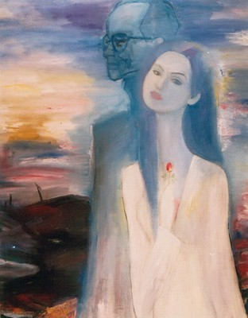

Tình yêu như trái phá... con tim mù lòa... Lúc gặp câu hát ấy lần đầu tiên khi lật một tập nhạc Trịnh Công Sơn trong một tiệm sách ở Huế vào những ngày khá bận rộn với tin tức chiến sự trong nước, tôi đã để mắt tôi dừng lại khá lâu trên trang giấy in bài nhạc có lời ca do chính tay anh viết và tôi cũng đã suy nghĩ khá lâu về hình ảnh mới mẻ này trong ngôn ngữ của tình yêu. Một hình ảnh rõ rệt, mạnh bạo, cho thấy tác giả có óc tưởng tượng phong phú.
Trước khi trái phá được Sơn khai sinh, người Việt chúng ta cũng đã quen thuộc với một từ ngữ khác, cũng chát chúa không kém, tả được cái sững sờ, cái tình trạng ngơ ngẩn, ngẩn ngơ mà ai cũng đã sống qua sau một lần yêu thành thật và do đó đắm đuối, si mê. Và đó là tiếng sét tình yêu (le coup de foudre) trong lối nói của người Pháp.
Tiếng sét này, cả nhân loại nghe được, cảm nhận được. Tiếng nổ này, lọt vào kinh nghiệm sống của một người đã thấm được, mà thấm sâu sắc, cảnh chết chóc, tang tóc do chiến tranh gây ra, nó thành ra tiếng đinh tai của trái phá. Thời bình người ta xửng vửng vì tiếng sét tình yêu. Sống với khói lửa mịt mù, bom đạn chập chờn ngày đêm, âm thanh của trái phá mới lọt một cách hết sức tự nhiên vào suy tư, vào ngôn ngữ của Trịnh Công Sơn. Thật ra, có tưởng tượng nào mà không thoát thai, phát tích từ kinh nghiệm sống.
Lời trong những ca khúc của Trịnh Công Sơn nhan nhản những hình ảnh chiến tranh, đầy rẫy những khổ hận của chiến thời như vậy. Lọt vào những bộ óc bị chính trị điều kiện hóa, chúng có thể được đem ra làm lợi khí cho một luận điệu tuyên truyền nào đó, tuỳ theo chỗ đứng - tôi cố ý tránh từ ngữ "lập trường" - của người phát biểu. Nhưng nếu chỉ có những thảm cảnh chiến tranh, nếu chỉ có ngần ấy thì toàn bộ tác phẩm của anh - non 600 bài chứ không ít - đã và sẽ không để lại cái lay động thấm thía mà chúng ta vẫn cảm nhận mỗi khi ngẫm nghĩ về ý nghĩa của một câu hát, một bài ca.
Chúng ta còn có một người nghệ sĩ. Một nghệ sĩ rất giàu tình cảm và nhạy cảm. Một nghệ sĩ bị ám ảnh bởi những thắc mắc về ý nghĩa cuộc đời. Những thắc mắc, những ray rứt bắt nguồn từ một nhận thức rất rõ ràng về tính cách phi lý của bạo động, của chiến tranh, dù là trong tất cả mấy trăm ca khúc đó, theo chỗ tôi biết, không có câu nào anh nói trắng ra như vậy.
Anh không ngả hẳn về một vũ trụ quan của một tôn giáo hay tín ngưỡng nào. Lý do giản dị là nếu anh hoàn toàn tin tưởng vào một tôn giáo nào thì hẳn anh đã ngưng thắc mắc. Điều tôi tạm gọi là cái “loay hoay siêu hình" của anh nó lướt qua nhiều niềm tin được nhắc đến qua thuật ngữ của Phật giáo, Thiên Chúa giáo, Lão Trang mà Sơn đã sử dụng trong ngôn từ của anh.
Cát bụi mệt nhoài chăng? Thượng đế của Thiên Chúa chẳng đã tạo ra con người từ một nắm đất là gì? Cái phù du của đời người nó nhắc nhở rằng một ngày nào đó ai cũng trở về với cát bụi. Dấu chân địa đàng chăng? Đặt câu hỏi đó là nghĩ ngay đến Thiên đàng của chúa Ki-tô. Ta thấy em trong tiền kiếp, có nghĩa là thấy người yêu trong luân hồi vô tận. Tìm trong vô thường có đôi dòng kinh... Thì đó, tiền kiếp và vô thường lại là những đóa hoa đượm hương giải thoát luôn hé nụ trong vườn Tứ Diệu Đế của Đức Thích Ca. Không có cái chết đầu tiên... mà cũng không có cái chết sau cùng hình như nhuốm chút vô thủy vô chung của vũ trụ Trang Tử. Một cõi đi về . .. loáng thoáng hình bóng của sinh ký tử qui, của sống gửi thác về trong tín ngưỡng cổ truyền. Nhưng mà về đâu? Chính vì anh vui chơi giữa đời, biết đâu nguồn cội, chính vì ý thức được cái bé bỏng của con người giữa vũ trụ, tức là thời gian và không gian trong triết học Trung Quốc, rồi không biết về đâu cho nên anh cô đơn vô cùng. Vì cô đơn nên anh khát yêu và khát được yêu. Vì khao khát tình yêu nên trái tim của anh, khối tình của anh, anh trải rộng ra "cả và thiên hạ", nói như Hàn Mặc Tử. Anh yêu từng ánh mắt không kịp bắt, từng tà áo vụt thoáng qua, từng tia nắng, từng giọt mưa, từng viên sỏi, từng chiếc lá. Tôi nghĩ điều anh yêu nhất chính là cái mong manh của từng phút giây hoan lạc trong cuộc sống. Anh khuyên tất cả mọi người hãy yêu, hãy yêu nhau bởi vì sẽ có lúc mà đời đốt nến chia phôi dù nhớ thương cũng hoài. Vì anh thường bận lòng với cái phù du của một nụ cười, cái chớp mắt của một sợi nắng, cái vụt thoáng của một giọt mưa, cái hối hả của ngày tháng, nên ca khúc của anh thường là buồn.
Nhưng cái buồn trong con người Trịnh Công Sơn không chỉ dừng lại ở những nhớ thương tiếc nuối không có đối tượng như cái buồn vơ vẩn, cái nhớ vẩn vơ thường thấy trong cảm xúc của những tâm hồn lãng mạn trữ tình, nó đi xa hơn chút nữa, nó đi sâu hơn chút nữa, nó mở đường cho những chuyến lên đường đi vào thế giới sầu của những quả tim, những khối óc đã ý thức được điều mà chúng ta thường nhắc đến như là "thân phận con người".
Từ ngữ “thân phận con người" thường vẫn hàm một cái ý cam chịu, có phần tiêu cực trước sự sắp xếp của định mệnh, của số kiếp. Cái sầu về thân phận con người trong thi ca Trịnh Công Sơn, có thì có đấy thật, nhưng chính cái sầu đó lại là động cơ thúc giục anh nên yêu chính mình, yêu người yêu đời, yêu tình yêu, nó không bợn một mảy may yếm thế.
Cái tích cực của Trịnh Công Sơn không vùng lên mà phản kháng điều không thể tránh được. Kiếp người đã ngắn ngủi, thêm đó là cảnh con người giết con người. Vạn vật là vô thường, thêm vào đó là sức tàn phá của chiến tranh. Trịnh Công Sơn nhập cuộc - cuộc đây là cuộc đời, cuộc sống - giữa cái màn ấy của một tấn bi kịch, nếu không hẳn là thảm kịch. Đừng bắt anh yêu đời với cái vô tư của tuổi thơ mà hãy nhìn anh yêu đời với cái bó tay của một người đứng trước điều tôi tạm gọi là cái "như-vậy-rồi- đó” của nhân sinh, cái yêu đời thoáng đôi chút ngậm ngùi, ngậm ngùi mà không chua chát, của một cái đầu đang cúi xuống trước khổ lụy của tâm giới, nhưng trí tuệ lại ngẩng lên mà hướng về viễn tượng của cái thoáng, cái thoát, cái độ lượng, cái đạt.
Trước mặt tôi, bây giờ, treo trên tường là bài ở trọ do chính tay Sơn chép tặng vợ chồng tôi. Bài lục bát ấy có hai câu:
Nhân gian về trọ nhiều nơi
Riêng đây là chôn chưa nguôi máu đào,
Trong những ấn bản về sau này của bài đó, tôi thấy vắng bóng hai câu trên. Tôi không nghĩ rằng chính Sơn đã tự ý bỏ điều nhận xét khách quan ấy vì lúc ấy chiến cuộc chưa chấm dứt. Dễ gì mà một người mẹ lại rứt được một đứa con của mình.
Nhưng mà có vắng hai câu thơ kia thì toàn bộ thi ca của anh cũng vẫn không vì thế mà giảm giá. Con người nghệ sĩ lang thang dưới vòm trời này, dưới vùng trời Việt Nam ấy, con người nghệ sĩ này nặng nghìn cân vì cái suy tư của mình mà cũng nhẹ tênh trong tâm trạng của một tên hát rong, con người ấy đã xâu một viên ngọc lưu ly vào chuỗi trân châu kia của thơ và nhạc Việt. Tôi nghĩ cái lóng lánh của viên ngọc ấy còn mãi sưởi ấm niềm cô đơn và xoa dịu nỗi khắc khoải của bất cứ ai biết ngắm nó với một cái nhìn phóng thẳng từ trái tim mình.